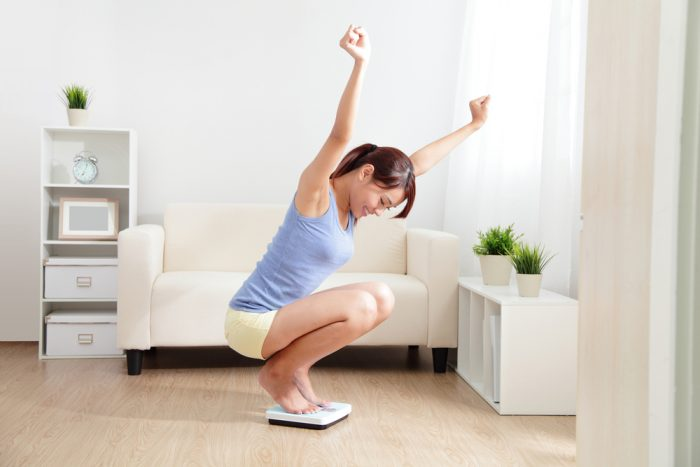

ကိုယ်အလေးချိန်တက်မလာအောင် ထိန်းထားချင်သူတွေအတွက် သင့်တော်တဲ့ လေ့ကျင့်ခန်းအချို့

တိုးတက်လာတဲ့ခေတ်ကာလအနေအထား အစားအသောက်နဲ့ လုပ်ငန်းခွင်ပုံစံတွေကြောင့် မလိုချင်ဘဲတိုးလာတာတွေက ခန္ဓာကိုယ်တွင်းအဆီတွေနဲ့ ကိုယ်အလေးချိန်တွေပါ။ တစ်ပတ်တစ်ခါ ပေါင်ချိန်လိုက်တိုင်းကို ပေါင်ချိန်တွေတက်နေတာကြောင့် စိတ်ပျက်နေတဲ့ ကိုကိုတွေနဲ့လေဒီတွေအတွက် ခန္ဓာကိုယ်က အဆီပိုတွေကို ကိုယ်အလေးချိန်ကို ထိန်းညှိရာမှာ အထောက်အကူဖြစ်စေမယ့် လေ့ကျင့်ခန်းလေးတွေကို ဒီဆောင်းပါးလေးကနေတဆင့်ပြောပြပေးမယ်နော်။
၁. Plank ထောက်ပါ
ခန္ဓာကိုယ်တစ်ခုလုံးက ကြွက်သားတွေအတွက် အထောက်အပံ့ပေးနိုင်တဲ့ လေ့ကျင့်ခန်းတစ်ခုပေါ့။ ညီညာနေတဲ့ ကြမ်းပြင်တစ်ခုရှိရုံနဲ့တင်လုပ်လို့ရတဲ့ ကိရိယာလွတ်လေ့ကျင့်ခန်းတစ်မျိုးပါ။ လက်တွေခြေထောက်တွေနာမှာ စိုးရင်တော့ ယောဂဖျာလေးခင်းပြီးလုပ်လို့ရပါတယ်။
အရင်ဆုံး ကြမ်းပြင်ပေါ်မှာမှောက်လိုက်ပါ။ ပြီးရင်တော့ ခြေဖျားနဲ့ တံတောင်ဆစ်ကို အားယူလို့ ကိုယ်လုံးတစ်ခုလုံးကို ကြမ်းပြင်ကနေလွတ်အောင်လုပ်ပေးပါ။ တစ်ခါကို ၅ စက္ကန့်လောက်ကြာအောင်လုပ်ပါ။ လုပ်နိုင်လာတာနဲ့အမျှ အချိန်နည်းနည်းချင်းတိုးပြီးလုပ်သွားပေးပါ။
၂. Squats ထိုင်ပါ
ဒါကတော့ မိန်းကလေးတွေအတွက် ပိုသင့်တော်ပါတယ်။ ခြေထောက်နဲ့တင်ပါးကြွက်သားတွေကို သန်မာစေတဲ့လေ့ကျင့်ခန်းတစ်ခုပါ။ လွယ်တယ်လို့ထင်ရပေမယ့် Squats ထိုင်တဲ့အခါ ပုံစံမမှန်ရင် ဒူးနာနိုင်ပါတယ်။
ဒီလေ့ကျင့်ခန်းက ပေါင်၊ခြေထောက်၊ဗိုက်နဲ့ တင်ပါးကြွက်သားတွေကို သန်မာဖွံ့ဖြိုးစေနိုင်ပါတယ်။ ခြေထောက်ကို ပခုံးအကျယ်အတိုင်းကားထားပေးပါ။ လက်တွေကို အရှေ့ဘက်ကို ဆန့်ထုတ်ပါ။ ဒူးကိုဖြည်းဖြည်းချင်းကွေးပါ။ တင်ပါးကို ၈ လက်မလောက်အောက်ဘက်ကိုနှိမ့်ပေးပါ။ ခါးမတ်မတ်ထားဖို့ မမေ့ပါနဲ့။ တစ်ခါထိုင်ရင် ၃ မိနစ်နှုန်းလောက်နဲ့ ၈ ကြိမ် ကနေ ၁၂ ကြိမ်လောက်လုပ်ပေးလို့ရပါတယ်။
၃. ဒိုက်ထိုးပါ
လက်မောင်း၊ ပခုံး၊ ရင်ဘတ်၊တင်ပါး နဲ့ ခြေထောက်တွေကို သန်မာစေနိုင်ပါတယ်။ ခန္ဓာကိုယ်တစ်ခုလုံးအသုံးပြုရတဲ့ အားကစားတစ်မျိုးပေါ့။ ဒိုက်ထိုးတာကလည်း မြေပြင်ညီတစ်ခုရှိရင်ကို ပြည့်စုံနေပါပြီ။ ဒိုက်ထိုးတဲ့ခုံရှိရင် ပိုအဆင်ပြေပေမယ့် မရှိလည်း အဆင်ပြေပါတယ်။ ဒိုက်ကို အပြည့်ထိုးလို့ရသလို ထိုင်ခုံပေါ်မှာလက်ထောက်ပြီး တဝက်ထိုးတာမျိုးလည်းလုပ်လို့ရပါတယ်။
မြေပြင်ပေါ်မှာ ခြေထောက်နဲ့ လက်ဖဝါးကို အားပြုလို့မှောက်လိုက်ပါ။ ကိုယ်အလေးချိန်မျှတစေဖို့ ကျောပြင်ကို ဆန့်နေအောင်ထားဖို့လိုပါမယ်။ ခြေထောက် ၂ ချောင်းကို ၁ ပေခွာထားပေးပါ။ လက်တွေကို မြေပြင်ကနေ ၉၀ ဒီဂရိပုံစံကျအောင်ထောက်ထားပါ။ တတ်နိုင်သလောက် အကြိမ်ရေကို တဖြည်းဖြည်းချင်းတိုးပြီး လေ့ကျင့်သွားပါ။
၄. Pull-Ups လေ့ကျင့်ခန်းလုပ်ပါ
ဒီလေ့ကျင့်ခန်းက နည်းနည်းလောက်ခက်ခဲပေမယ့် တော်တော်လေးတော့ထိရောက်မှုရှိပါတယ်။ ခိုလို့ကောင်းမယ့် တန်းတစ်တန်းတော့လိုပါမယ်။ နောက်ကျော၊လက်မောင်း နဲ့ လက်ဖျံတွေကို သန်စွမ်းစေနိုင်ပါတယ်။ လက်ကို ပခုံးအကျယ်အတိုင်းကားထားရပါမယ်။ ပြီးရင်တော့ တန်းကို လှမ်းဆွဲပြီးခန္ဓာကိုယ်ကို တောင့်နိုင်သမျှတောင့်ရင်း တန်းရဲ့ တဝက်လောက်ရောက်တဲ့အထိ ပင့်တင်ပါ။ ပြီးရင် ဖြည်းဖြည်းချင်းပြန်ချပါ။
ဒီလေ့ကျင့်ခန်းတွေလုပ်ရင်း အထိုင်များတဲ့နေ့စဉ်ဘဝနေထိုင်မှုပုံစံကြောင့် တိုးလာတဲ့ ကိုယ်အလေးချိန်တွေကို လျှော့ချလိုက်ပါ။
Source-Aye Thi Mon